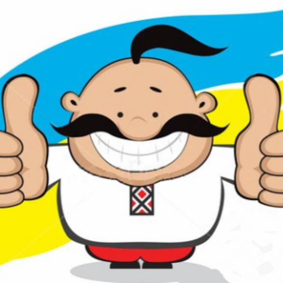
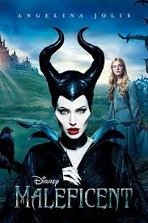
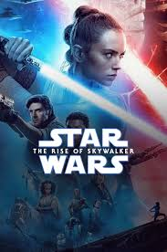
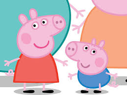

TV content with Ukrainian dubbing
Be Ukrainian watch with Ukrainian dubbing

Movies

Series

Cartoons

Movies
Two dobbing-Ukrainian & Original
Look everythink
Like
Be
Watch
Ukrainian
How they do the dubbing
Please answer simple questions
Go to Test